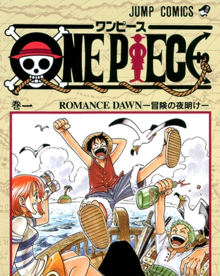

one pice vol 1
Monkey D. Luffy se niega a que nadie se interponga en su camino para convertirse en Rey de los Piratas. Se lanza a sucar los mares y se convertirá en un capitán dispuesto a no darse por vencido jamás hasta hacerse con el mayor tesoro de la historia: el legendario One Piece.
Comprar